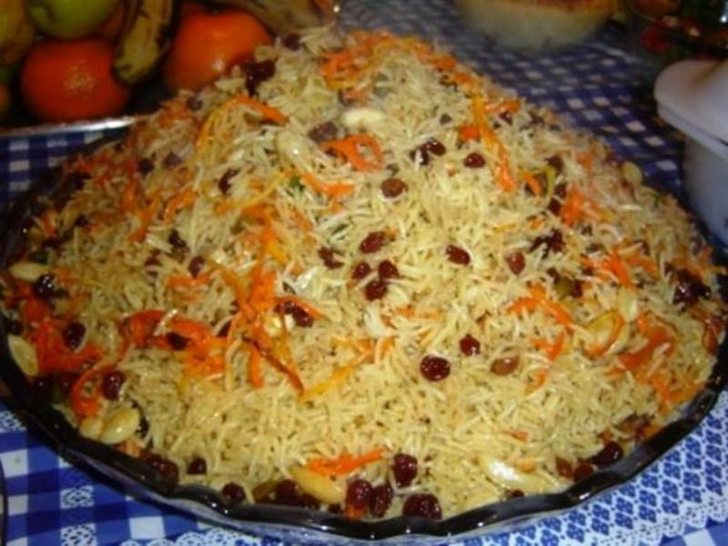

kabuli-palaw
Ingredients
- Basmati rice -- 3 cups
- Oil -- 1/2 cup
- Stewing lamb or beef, cubed -- 2 pounds
- Onions, thinly sliced -- 2
- Garlic, minced -- 3 or 4
- Cinnamon -- 1 stick
- Cardamom pods -- 8 to 10
- Cumin seeds -- 2 teaspoons
- Whole cloves -- 6 to 8
- tock or water -- 2 or 3 cup
- Salt and pepper -- to taste
- Carrots, peeled and cut into matchsticks or shredded -- 3
- Sugar -- 1/4 cup
- Ground cardamom -- 1 teaspoon
- Salt -- to taste
- Sliced almonds, toasted -- 1/2 cup
- Garam masala -- 2 teaspoon
Preparation
- In a large bowl, wash and drain the rice in 2 or 3 changes of water. Add more water to cover and set the rice aside to soak for 1 to 2 hours.
- Heat 1/4 cup of the oil in a large, heavy-bottomed pot over medium flame and, working in batches, brown the meat on all sides. Remove the meat to a plate and set aside.
- Add the onions to the hot oil and sauté until cooked through and softened, 4 to 5 minutes. Then add the garlic and whole spices and saute for another minute or so.
- Return the meat to the pot and pour in the stock or water along with salt and pepper to taste. Bring to a boil, then reduce heat to low, cover and simmer for about 1 1/2 hours, or until the meat is fork tender.
- Strain the meat, onions and spices from the simmering broth and set aside, reserving the broth.
- Set the pot over medium-high flame for 3 to 5 minutes. Next reduce heat to low and simmer gently for 15 to 20 minutes. Remove the pot from the heat and let it rest, covered, for another 10 minutes.
Gently stir the rice and meat together with a large fork. Mound the pulao on a large serving dish and garnish with the toasted almonds and a sprinkling of garam masala. Serve warm.